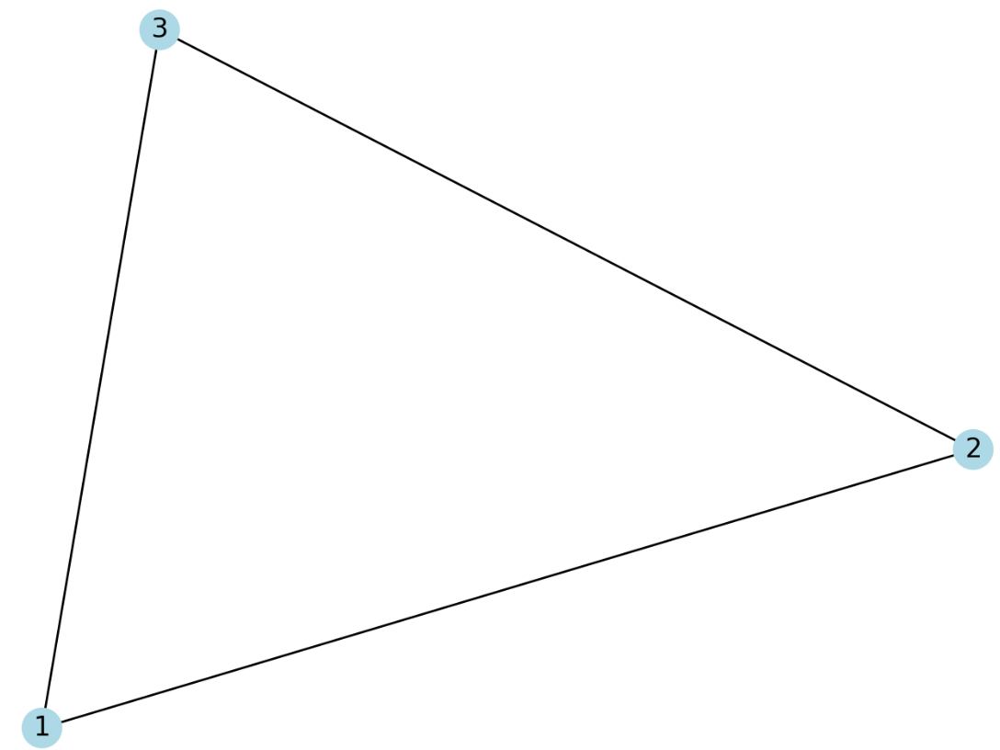
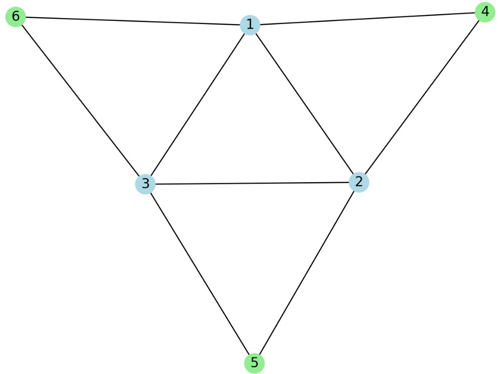
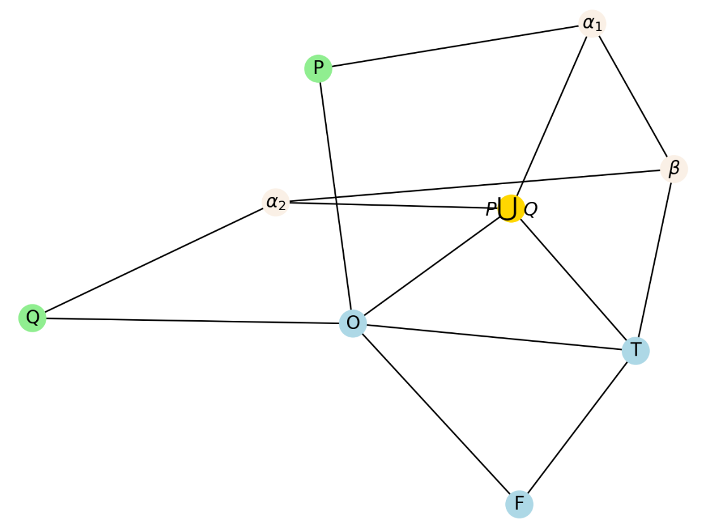
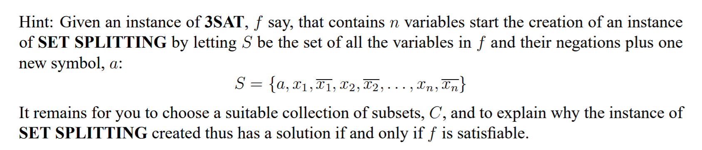

图\(G=<V,E>\)，是否存在一条长度至少为\(K\)的路
令\(K = |V|\)于是问题变成了Hamilton 通路问题，证毕。
令某个集合\(|S| < \infty\), \(C \subset 2^{S}\)，\(n = |C|\)，询问是否存在\(C\)中的\(k\)个元素，使得任意两个互不交叉
这个问题显然是团问题...
图\(G\)，能否被划分成\(k\)个互补相交的集合使得每个导出子图包含一个哈密尔顿回路
令\(k=1\)问题变成Hamilton 回路问题
给两张图\(G_{1}\)，\(G_{2}\)，求两个最大的子图同构
令第二张图为大小为\(k\)的完全图，整个问题变成了团问题。
有限集合\(A\) ，每个元素\(a \in A\)，每个元素均有一个值\(f: A \rightarrow R\)
将集合\(A\)分成\(K\)个互补相交的集合，使得每个子集的平方和的和小于等于\(J\)
对于这个划分问题，考虑用二划分问题向这个方向来检测
考虑平方增长的速度比线性快得多，直接复制n份，然后规约二划分
这里不是很严谨，下次一定
有向图\(G=<V,A>\)，正整数\(K \leq |V|\)
询问是否存在\(V'\subset V\)，\(|V'|\leq K\)，且\(G\)的每一条有向回路至少包含\(V'\)的一个点
这很显然是个击中集问题。
即X3C问题直接扩展成4的形式
考虑将X3C问题归约到X4C问题
对于每个X3C中的第\(i\)个集合\((a,b,c)\) ，直接扩展成\((a,b,c,d_{i})\)
这样会多出\(n\)个分量，为了保证多出的\(n\)个分量，直接添加\(C_{n}^{4}\)个元素，来保证全部被覆盖
当然这样还是有问题的，即不一定能整除，直接补全就好了
无向图\(G=<V,E>\)，\(K \leq |V|, K\in N^{+}\)
询问是否存在\(V'\subset V\)，st\(|V'|\leq K\)，且\(\forall v\in V/V',st,\exists u\in V',uv\in E\)
被我xjb画画出来了。
这个东西显然和点覆盖问题很像。
于是考虑用点覆盖问题规约到这个问题。
假设一个点覆盖的实例是\(G'=<V',E'>\)
构造一个新的图\(G''=<V'',E''>\)
其中对于\(E'\)中的每条边\(uv\)，**增量构造**一个新的点\(d_{i}\)，**增量构造**两条边\(ud_{i},vd_{i}\)
这个问题就变成了一个支配集问题。
来一张图看看。
基础点覆盖问题

新构造3个点4，5，6，转化成一个支配集的问题

世人皆知
爆智力*1
首先这个问题看起来就很3SAT，于是尝试从3SAT规约到这个问题。首先比较好想的一个部分就是
假设分别染成1，2，3这3种颜色，那么可以构造一个\(K_{3}\)，来指示真假。
然后就很困难了/youl
我在找了一发资料之后发现了下面这总构造方式，可以产生PQ的或\(P\bigcup Q\)
于是就很简单了...
至于怎么想出来的我还是不知道，我似乎对图论知识并不很敏感的样子...

图\(G=<V,E>\)，\(|V|=3q\)
询问是否存在一个\(V\)的划分，使得每个互补相交的子集\(V_{i}=\{v_{1},v_{2},v_{3}\}\)
其点导出子图，存在一条长度为2的路。
考虑通过X3C问题规约到这个问题
假设有一个X3C的问题实例\((a_{i},b_{i},c_{i})\)
构造\(3q\)个点，然后连边\((a_{i},b_{i}),(b_{i},c_{i})\)
这样每次一个划分，就代表了选择了X3C问题中的一个元素。
世人皆知
考虑通过支配集问题归约到这个问题。
对于支配集问题的图\(G=<V,E>\)
将\(V\)中顶点复制一份作为工厂，每个点向自己和关联点连\(d=0\)的边。
然后就做完了/youl
世人皆知
被爆智力*3，被爆到不想写证明了
http://profs.sci.univr.it/~rrizzi/classes/Complexity/provette/Santuari/steiner.pdf
一个有限集\(S\)，\(C \subset 2^{S}\)
询问是否存在一个\(S\)的划分\(S_{1},S_{2}\)，使得\(\forall x \in C, x \not\subset S_{1},x\not\subset S_{2}\)
被爆智力*2

这个东西真的好靠直觉呀/youl，给个提示就好想了。
考虑使用3SAT归约到这个问题，下面来着手构造\(C\)
对于\((a_{i},b_{i},c_{i})\)来说，构造\((a_{i},\overline a_{i}),(b_{i},\overline b_{i}),(c_{i},\overline c_{i})\)
以及\((d, \overline a_{i}, \overline b_{i}, \overline c_{i})\)
假设这个集合分裂问题得到了一个解，将\(d\)所在的集合的变量全设为真，其余全设为假。
上一篇：NP-Complete问题乱证 下一篇：NP-Complete问题乱证